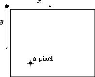

Structures
The input of a function is seldom a single measurement (number), a single switch position (boolean), or a single name (symbol). Instead, it is almost always a piece of data that represents an object with many properties. Each property is a piece of information. For example, a function may consume a record about a CD; the relevant information might include the artist's name, the CD title, and the price. Similarly, if we are to model the movement of an object across a plane with a function, we must represent the position of the object in the plane, its speed in each direction, and possibly its color. In both cases, we refer to several pieces of information as if they were one: one record and one point. In short, we COMPOUND several pieces of data into a single piece of data.
Scheme provides many different methods for compounding data. In this section, we deal with structures. A structure combines a fixed number of values into a single piece of data. In section 9, we will encounter a method for combining an arbitrarily large number of values into a single piece of data.
Structures |
Suppose we wish to represent the pixels (colored dots) on our computer monitors. A pixel is very much like a Cartesian point. It has an x coordinate, which tells us where the pixel is in the horizontal direction, and it has a y coordinate, which tells us where the pixel is located in the downwards vertical direction. Given the two numbers, we can locate a pixel on the monitor, and so can a computer program.
DrScheme's teachpacks represent pixels with posn structures. A
posn structure combines two numbers. That is, a posn is
a single value that contains two values. We can create a posn
structure with the operation make-posn, which consumes two
numbers and makes a posn. For example,
(make-posn 3 4) (make-posn 8 6) (make-posn 5 12)
are posn structures. Each of these structures has the same status
as a number as far as computations are concerned. Both primitive
operations
and functions can consume and produce structures.
Now consider a function that computes how far some pixel is from the origin. The contract, header, and purpose statement are easy to formulate:
;;distance-to-0 : posn -> number;; to compute the distance ofa-posnto the origin (define (distance-to-0 a-posn) ...)
In other words, distance-to-0 consumes a single value, a
posn structure, and produces a single value, a number.
We already have some input examples, namely, the three posn
structures mentioned above. What we need next are examples that relate
inputs and outputs. For points with 0 as one of the coordinates,
the result is the other coordinate:
(distance-to-0 (make-posn 0 5)) = 5 and (distance-to-0 (make-posn 7 0)) = 7
In general, we know from geometry that the distance from the origin to a
position with coordinates x and y is distance
Thus,
(distance-to-0 (make-posn 3 4)) = 5 (distance-to-0 (make-posn 8 6)) = 10 (distance-to-0 (make-posn 5 12)) = 13
Once we have examples, we can turn our attention to the definition of the
function. The examples imply that the design of distance-to-0
doesn't need to distinguish between different situations. Still, we are
stuck now, because distance-to-0 has a single parameter that
represents the entire pixel but we need the two coordinates to compute the
distance. Put differently, we know how to combine two numbers into a
posn structure using make-posn and we don't know how to
extract these numbers from a posn structure.
Scheme provides operations for extracting values from
structures.18 For posn structures, Scheme
supports two such operations: posn-x and posn-y. The
former operation extracts the x coordinate; the latter extracts the
y coordinate.
To describe how posn-x, posn-y, and make-posn
are related, we can use equations that are roughly analogous to the
equations that govern addition and subtraction:
(posn-x (make-posn 7 0)) = 7
and
(posn-y (make-posn 7 0)) = 0
The equations only confirm what we already know. But suppose we introduce the following definition:
(define a-posn (make-posn 7 0))
Then we can use the two operations as follows in the Interactions window:
(posn-x a-posn) = 7 (posn-y a-posn) = 0
Naturally, we can nest such expressions:
(* (posn-x a-posn) 7) = 49 (+ (posn-y a-posn) 13) = 13
Now we know enough to complete the definition of distance-to-0. We
know that the function's a-posn parameter is a posn
structure and that the structure contains two numbers, which we can extract
with (posn-x a-posn) and (posn-y a-posn). Let us add
this knowledge to our function outline:
(define (distance-to-0 a-posn) ... (posn-x a-posn) ... ... (posn-y a-posn) ...)
Using this outline and the examples, the rest is easy:
(define (distance-to-0 a-posn) (sqrt (+ (sqr (posn-x a-posn)) (sqr (posn-y a-posn)))))
The function squares (posn-x a-posn) and (posn-y a-posn),
which represent the x and y coordinates, sums up the results, and takes
the square root. With DrScheme, we can also quickly check that our new
function produces the proper results for our examples.
Exercise 6.1.1. Evaluate the following expressions:
(distance-to-0 (make-posn 3 4))
(distance-to-0 (make-posn (* 2 3) (* 2 4)))
(distance-to-0 (make-posn 12 (- 6 1)))
by hand. Show all steps. Assume that sqr performs its
computation in a single step. Check the results with DrScheme's
stepper.  Solution
Solution
Drawing |
DrScheme provides the graphics teachpack draw.ss, which introduces simple graphics operations:
draw-solid-line, which consumes two posn
structures, the beginning and the end of the line on the canvas, and a
color.
draw-solid-rect, which consumes four arguments:
a posn structure for the upper-left corner of the rectangle,
a number for the width of the rectangle, another number for its height, and
a color.
draw-solid-disk, which consumes three arguments:
a posn structure for the center of the disk, a number for the
radius of the disk, and a color.
draw-circle, which consumes three arguments:
a posn structure for the center of the circle, a number for the
radius, and a color.
Each of the operation produces true, if it succeeds in changing
the canvas as specified. We refer to the action to the canvas as an
EFFECT,
but we will ignore studying the precise nature of effects
until part VII. Also, if anything goes wrong with the
operation, it stops the evaluation
with an error.
Each drawing operation also comes with a matching clear-
operation: clear-solid-line, clear-solid-rect,
clear-solid-disk, and clear-circle. If these functions
are applied to the same arguments as their matching draw-
function, they clear the corresponding shapes of the
canvas.19
Drawing operations on computers interpret the screen as follows:
|  |
Drawing |
Exercise 6.2.1. Evaluate the following expressions in order:
(start 300 300), which opens a canvas;
(draw-solid-line (make-posn 10 10) (make-posn 110 10) 'red), which
draws a red line close to, and parallel to, the upper end of the canvas;
(draw-solid-rect (make-posn 10 30) 100 50 'blue), which draws
a blue rectangle of width 100 and height 50 parallel to the red line;
(draw-circle (make-posn 110 30) 30 'yellow), which draws a yellow
circle of radius 30 centered at the upper right corner of the rectangle;
(draw-solid-disk (make-posn 10 80) 50 'green), which draws a
green disk of radius 50 centered at the lower left corner of the rectangle;
and
(stop), which closes the canvas.
Read the documentation for draw.ss in DrScheme's HelpDesk.
The definitions and expressions in figure 8 draw a traffic light. The program fragment illustrates the use of global definitions for specifying and computing constants. Here, the constants represent the dimensions of the canvas, which is the outline of the traffic light, and the positions of three light bulbs.
Exercise 6.2.2.
Develop the function clear-bulb. It consumes a symbol that denotes
one of the possible colors: 'green, 'yellow, or
'red, and it produces true. Its effect is ``to turn off''
the matching bulb in the traffic light. Specifically, it should clear the
disk and display a circle of the matching color instead.
Choice of Design Recipe: See section 5 for designing functions that consume one of an enumeration of symbols.
Testing: When testing functions that draw shapes into a canvas, we ignore test expressions. Although it is possible to implement appropriate test suites, the problem is beyond the scope of this book.
Combining Effects: The primitive operations
for drawing and
clearing disks and circles produce true if they successfully
complete their task. The natural way to combine the values and the effects
of these functions is to use an and-expression.
In particular, if
exp1 and exp2 produce effects and we wish to see the
effects of exp2 after those of exp1, we write
(and exp1 exp2)
Later we will study effects in more detail and learn different ways to
combine effects.  Solution
Solution
Exercise 6.2.3.
Develop a function draw-bulb. It consumes a symbol that denotes
one of the possible colors: 'green, 'yellow, or
'red, and produces true. Its effect is ``to turn on'' the
matching bulb in the traffic light.  Solution
Solution
Exercise 6.2.4.
Develop the function switch. It consumes two symbols, each of
which stands for a traffic light color, and produces true. Its
effects are to clear the bulb for the first color and then to draw the
second bulb.  Solution
Solution
Exercise 6.2.5.
Here is the function next:
;; next : symbol -> symbol
;; to switch a traffic light's current color and to return the next one
(define (next current-color)
(cond
[(and (symbol=? current-color 'red) (switch 'red 'green))
'green]
[(and (symbol=? current-color 'yellow) (switch 'yellow 'red))
'red]
[(and (symbol=? current-color 'green) (switch 'green 'yellow))
'yellow]))
It consumes the current color of a traffic light (as a symbol) and produces
the next color that the traffic light shows. That is, if the input is
'green, it produces 'yellow; if it is 'yellow,
it produces 'red; and if it is 'red, it produces
'green. Its effect is to switch the traffic light from the input
color to the next color.
Replace the last three lines of the program fragment in
figure 8 with (draw-bulb 'red). This creates
a traffic light that is red. Then use next to switch the traffic
light four times.  Solution
Solution
In the preceding section we explored one particular class of structures:
the posn structures. A posn structure combines two
numbers, and it is useful to represent pixels. If we wish to represent
employee records or points in three-dimensional space, however,
posns are useless. DrScheme therefore permits programmers to
define their own structures so that they can represent all kinds of
objects with a fixed number of properties.
Using and Defining Structures |
A STRUCTURE DEFINITION
is, as the term says, a new form of
definition. Here is DrScheme's definition of posn:
(define-struct posn (x y))
When DrScheme evaluates this structure definition, it creates three operations for us, which we can use to create data and to program:
make-posn, the CONSTRUCTOR,
which creates
posn structures;
posn-x, a SELECTOR,
which extracts the x coordinate;
posn-y, also a selector, which extracts the y coordinate.
In general, the names of these new operations are created by prefixing the name of the structure with ``make-'' and by postfixing the name with all the field names. This naming convention appears to be complicated but, with some practice, it is easy to remember.
Now consider the following example:
(define-struct entry (name zip phone))
The structure represents a simplified entry into an address book. Each
entry combines three values. We also say that each entry
structure has three fields: name, zip, and
phone. Because there are three fields, the constructor
make-entry consumes three values. For example,
(make-entry 'PeterLee 15270 '606-7771)
creates an entry structure with 'PeterLee in the
name-field, 15270 in the zip-field, and
'606-7771 in the phone-field.
One way to think of a structure is as a box with as many compartments as there are fields:
'PeterLee15270'606-7771
|
entry structures.
The define-struct definition of entry also introduces new
selectors:
entry-name entry-zip entry-phone
Here is how we can use the first one:
(entry-name (make-entry 'PeterLee 15270 '606-7771)) = 'PeterLee
If we give the structure a name,
(define phonebook (make-entry 'PeterLee 15270 '606-7771))
then we can use the selectors in the Interactions window to extract the data from the three fields:
(entry-name phonebook) = 'PeterLee (entry-zip phonebook) = 15270 (entry-phone phonebook) = '606-7771
Put more graphically, a constructor creates a box with several compartments and puts values in it. A selector reveals the contents of a particular compartment, but leaves the box alone.
Here is one final example, a structure for representing rock stars:
(define-struct star (last first instrument sales))
It defines the class of star structures, each of which has four
fields. Accordingly, we get five new primitive operations:
make-star star-last star-first star-instrument star-sales
The first is for constructing star structures; the others are
selector operations for extracting values from a star structure.
To create a star structure, we apply make-star to three
symbols and a positive integer:
(make-star 'Friedman 'Dan 'ukelele 19004) (make-star 'Talcott 'Carolyn 'banjo 80000) (make-star 'Harper 'Robert 'bagpipe 27860)
To select the first name of a star structure called E, we use
(star-first E)
Other fields are extracted with other selectors.
Exercise 6.3.1. Consider the following structure definitions:
(define-struct movie (title producer))
(define-struct boyfriend (name hair eyes phone))
(define-struct cheerleader (name number))
(define-struct CD (artist title price))
(define-struct sweater (material size producer))
What are the names of the constructors and the selectors that each of them
adds to Scheme? Draw box representations for each of these
structures.  Solution
Solution
Exercise 6.3.2. Consider the following structure definition
(define-struct movie (title producer))
and evaluate the following expressions:
(movie-title (make-movie 'ThePhantomMenace 'Lucas))
(movie-producer (make-movie 'TheEmpireStrikesBack 'Lucas))
Now evaluate the following expressions, assuming x and y
stand for arbitrary symbols:
(movie-title (make-movie x y))
(movie-producer (make-movie x y))
Formulate equations that state general laws concerning the relationships of
movie-title and movie-producer and
make-movie.  Solution
Solution
Functions both consume and produce structures. Suppose we need to record an
increase of sales for one of our stars. This act should be recorded in the
star's record. To do so, we should have a function that consumes a
star structure and produces a star structure with the
same information except for the sales component. Let's assume for now that
the function adds 20000 to the star's sales.
First, we write down a basic description of the function, using our contract, header, and purpose format:
;;increment-sales : star -> star;; to produce astarrecord likea-starwith20000more sales (define (increment-sales a-star) ...)
Here is an example of how the function should process star structures:
(increment-sales (make-star 'Abba 'John 'vocals 12200)) should produce (make-star 'Abba 'John 'vocals 32200))
The three sample star structures from above are also good
examples of potential inputs.
The increment-sales function must construct a new star
structure with make-star, but to do so, it must also extract the
data in a-star. After all, almost all of the data in
a-star is a part of the star structure produced by
increment-sales. This suggests that the definition of
increment-sales contains expressions that extract the four
fields of a-star:
(define (increment-sales a-star) ... (star-last a-star) ... ... (star-first a-star) ... ... (star-instrument a-star) ... ... (star-sales a-star) ... )
As we have seen with the examples, the function adds 20000 to
(star-sales a-star) and assembles the four pieces of data into a
star structure with
make-star. Figure 9 contains the complete
definition.
Exercise 6.3.3.
Provide a structure definition that represents an airforce's jet fighters.
Assume that a fighter has four essential properties: designation
('f22, 'tornado, or 'mig22), acceleration,
top-speed, and range. Then develop the function within-range. The
function consumes a fighter record and the distance of a target from the
(fighter's) base. It determines whether the fighter can reach the intended
target. Also develop the function reduce-range. The function
consumes a fighter record and produces one in which the range
field is reduced to 80% of the original value.  Solution
Solution
Consider the following expression:
(make-posn 'Albert 'Meyer)
It constructs a posn structure from two symbols. If we now apply
distance-to-0 to this structure, the computation fails miserably:
(distance-to-0 (make-posn 'Albert 'Meyer)) = (sqrt (+ (sqr (posn-x (make-posn 'Albert 'Meyer))) (sqr (posn-y (make-posn 'Albert 'Meyer))))) = (sqrt (+ (sqr 'Albert) (sqr (posn-y (make-posn 'Albert 'Meyer))))) = (sqrt (+ (* 'Albert 'Albert) (sqr (posn-y (make-posn 'Albert 'Meyer)))))
That is, it requires us to multiply 'Albert with itself. Similarly,
(make-star 'Albert 'Meyer 10000 'electric-organ)
does not produce a star structure according to our intentions. In
particular, the structure is not suitable for processing by
increment-sales.
To avoid such problems and to assist with the development of functions, we must add a data definition to each structure definition.
Data Definitions |
A DATA DEFINITION
states, in a mixture of English and Scheme, how we intend to use
a class of structures and how we construct elements of this class of
data. For example, here is a data definition for posn structures:
A posn is a structure:
(make-posn x y) x and y are numbers.
It says that a valid posn structure always contains two
numbers, and nothing else. Hence, when we use make-posn to create
a posn structure, we must apply it to two numbers; when a function
contains selector expressions for posn structures, we may now
assume that their result is a number.
The data definition for star structures is only slightly more
complicated:
(make-star last first instrument sales) last, first, and instrument are symbols
and sales is a number.
This data definition says that valid star structures
contain symbols in the fields for last name, first name,
and instrument, and a number in the sales field.
|
In general, a data definition identifies a subclass of Scheme's universe of
values: see figure 10. As we have seen so far, Scheme's
universe contains numbers, symbols, images, strings, chars, booleans, and
many different classes of structures. Our functions, however, are intended
to work only for a subclass of values. For example, area-of-disk
consumes only numbers; reply from section 5 consumes
only symbols. A few subclasses, such as number, already have
names, because they are useful for all kinds of programming tasks. Others
are only interesting in the context of a specific problem. For those
cases, a programmer should introduce a data definition.
The most important role of a data definition is that of a covenant between
programmers and users. We expect both groups to respect such data
definitions, and we expect the programmer to exploit it for the function
construction. For example, when the programmer of distance-to-0
specifies that all posns contain two numbers, a user must always
apply distance-to-0 to a posn structure with two
numbers. Furthermore, as we will discuss over the next few sections, we
expect a programmer to exploit data definitions for function
developments. Naturally, a data definition in English and Scheme does not
prevent us from abusing make-posn. It is, however, a written
statement of intent, and a person who willingly violates or ignores this
covenant must face the consequences of ill-behaving
computations.20
Exercise 6.4.1. Provide data definitions for the following structure definitions:
(define-struct movie (title producer))
(define-struct boyfriend (name hair eyes phone))
(define-struct cheerleader (name number))
(define-struct CD (artist title price))
(define-struct sweater (material size producer))
Make appropriate assumptions about what data goes with which
field.  Solution
Solution
Exercise 6.4.2.
Provide a structure definition and a data definition for representing
points in time since midnight. A point in time consists of three numbers:
hours, minutes, and seconds.  Solution
Solution
Exercise 6.4.3.
Provide a structure definition and a data definition for representing
three-letter words. A word consists of letters, which we
represent with the symbols 'a through
'z.  Solution
Solution
Sections 6.1 through 6.4 suggest that the design of functions for compound data proceeds in a regular manner. First, a programmer must recognize that structures are needed. We follow the simple rule of using structures whenever the description of some object specifies several pieces of information. If we don't use structures in these cases, we quickly lose track of which data belongs to which object, especially when we write large functions that process massive amounts of data.
Second, a programmer can use the structure and data definitions for the organization of a function. We use the term template when we design functions. As we will see in this and many future sections, the template matches the data definition, and the template is the essential step in the careful design of functions.
To emphasize this point, we modify our function design recipe from section 2.5 to accommodate compound data. Most importantly, working with compound data requires adjustments in a few of the basic design steps and two new steps: data analysis and template design:
|
Until now we could use Scheme's classes of atomic data (numbers, symbols, images, etc.) to represent information. But they are not enough. If we discover that an object has N properties, we introduce a structure definition with N fields and supply a data definition that specifies what kind of data the fields may contain.
Let us consider functions that process student records at a school. If a student's interesting properties for a school are
the first name,
the last name, and
the name of the home-room teacher,
then we should represent information about a student as a structure:
(define-struct student (last first teacher))
Here is the data definition that specifies the class of student structures as precisely as possible:
(make-student l f t) l, f, and t are symbols.The corresponding data class contains structures like these:
(make-student 'findler 'kathi 'matthias) (make-student 'fisler 'sean 'matthias) (make-student 'flatt 'shriram 'matthias)
number and symbol,
and those names that we introduced in data definitions, such as
student.
In other words, a template expresses what we know about the inputs, and nothing about the outputs. We can therefore use the same template for all functions that consume the same kind of structure. Also, because a template does not express anything about the purpose of the function, we can formulate it before or after we have developed examples.
Consider a function that consumes a student structure and a teacher
name:
;; process-student : student symbol -> ???
(define (process-student a-student a-teacher) ...)
Then a-student is a parameter that stands for a structure and
a-teacher stands for just a symbol. The template therefore has the
following shape:
;; process-student : student symbol -> ???
(define (process-student a-student a-teacher)
... (student-last a-student) ...
... (student-first a-student) ...
... (student-teacher a-student) ...)
The ??? output reminds us that we don't assume anything about the
output of the function. We design every function that consumes a
student structure using this template.
student structures. The first function, check, is supposed
to return the last name of the student if the teacher's name is equal to
a-teacher and 'none otherwise:
(check (make-student 'Wilson 'Fritz 'Harper) 'Harper) ;; expected value: 'Wilson (check (make-student 'Wilson 'Fritz 'Lee) 'Harper) ;; expected value 'none
The second function, transfer, is supposed to produce a student
structure that contains the same information as a-student except
for the teacher field, which should be a-teacher:
(transfer (make-student 'Wilson 'Fritz 'Harper) 'Lee) ;; expected value: (make-student 'Wilson 'Fritz 'Lee) (transfer (make-student 'Woops 'Helen 'Flatt) 'Fisler) ;; expected value: (make-student 'Woops 'Helen 'Fisler)
Let us return to our first example, check:
(define (check a-student a-teacher) (cond [(symbol=? (student-teacher a-student) a-teacher) (student-last a-student)] [else 'none]))
This particular function uses two of the three selector expressions from the
template. Specifically, it compares the result of the selector expression
(student-teacher a-student) with a-teacher and, if they
are equal, produces the result of (student-last a-student). Just
naming the results of the selector expressions and reading the problem
statement makes the definition obvious.
Similarly, the transfer function is easy to define using the
template and the examples:
(define (transfer a-student a-teacher) (make-student (student-last a-student) (student-first a-student) a-teacher))
This second function uses the same two selector expressions as the first example, but in a different way. The key observation, however, is that the template reminds us of all the information that we have available. When we define the function, we must use and combine the available information.
Figure 12 presents the recipe for compound data in tabular form. In practice, though, a function contains many functions that all work on the same class of input data. It is therefore normal to reuse the template many times, which means that examples are often constructed after the template is set up. Compare it with the design recipes in figures 4 and 6.
|
Exercise 6.5.1. Develop templates for functions that consume the following structures:
(define-struct movie (title producer))
(define-struct boyfriend (name hair eyes phone))
(define-struct cheerleader (name number))
(define-struct CD (artist title price))
(define-struct sweater (material size producer)) .  Solution
Solution
Exercise 6.5.2.
Develop the function time->seconds, which consumes a time
structure (see exercise 6.4.2) and produces the number of seconds
since midnight that the time structure represents.
Example:
(time->seconds (make-time 12 30 2)) ;; expected value: 45002
Explain the example.  Solution
Solution
Use draw.ss |
Implementing a computer game often requires moving a picture across a computer monitor. In figure 13, for example, a simplistic face is moved from the left part of the canvas toward the right border. For simplicity, our pictures consist of many colored circles and rectangles. From section 6.2, we already know, for example, how to draw and erase a circle. Here we learn to translate a circle, that is, to move its representation along some line. In sections 7.4, 10.3, and 21.4 we learn to move entire pictures with compact programs.21
|
Following the design recipe, we start with structure and data definitions, then move on to templates, and finally write the necessary functions. The first sequence of exercises covers circles; the second one is about rectangles.
A First Note on Iterative Refinement: This method of developing large programs is our first taste of ITERATIVE REFINEMENT. The basic idea behind iterative refinement is to start with a simple version of the program, that is, a version that deals with the most important part of the problem. In this section, we start with functions that move the most basic shapes: circles and rectangles. Then we refine the program to deal with more and more complex situations. For example, in section 10.3 we learn to deal with pictures that consist of an arbitrary number of circles and rectangles. Once we have a complete program, we edit it so that others can easily read and modify it, too. Section 21.4 covers this aspect of the example.
Refining a program in this manner is the most prevalent method of designing complex programs. Of course, we must know the eventual goal for this method to succeed, and we must always keep it in mind. It is therefore a good idea to write down an action plan, and to reconsider the plan after each refinement step. We will discuss this process again in section 16.
Exercise 6.6.1.
Provide a structure definition and a data definition for representing
colored circles. A circle
is characterized by three pieces of
information: its center, its radius, and the color of its perimeter. The
first is a posn structure, the second a number, and the third a
(color) symbol.
Develop the template fun-for-circle, which outlines a function
that consumes circles. Its result is
undetermined.  Solution
Solution
Exercise 6.6.2.
Use fun-for-circle to develop draw-a-circle. The function
consumes a circle structure and draws the corresponding circle on
the screen. Use (start 300 300) to create the canvas before
testing the function.  Solution
Solution
Exercise 6.6.3.
Use the template fun-for-circle to develop
in-circle?. The function consumes a circle structure and
a posn and determines whether or not the pixel is inside the
circle. All pixels whose distance to the center is less or equal to the
radius are inside the circle; the others are outside.
Consider the circle in figure 14. The circle's center is
(make-posn 6 2), its radius is 1. The pixel labeled
A, located at (make-posn 6 1.5), is inside the
circle. The pixel labeled B, located at (make-posn 8 6),
is outside.  Solution
Solution
Exercise 6.6.4.
Use the template fun-for-circle to develop
translate-circle. The function consumes a circle
structure and a number delta. The result is a circle
whose center is delta pixels to the right of the input.
The function has no effect on the canvas.
Geometric Translation: Moving a geometric shape along a straight line is
referred to as a
translation.  Solution
Solution
Exercise 6.6.5.
Use the template fun-for-circle to develop
clear-a-circle. The function consumes a circle structure
and clears the corresponding circle on the
canvas.  Solution
Solution
Exercise 6.6.6.
Define the function draw-and-clear-circle, which draws a circle
structure, waits for a short time, and clears it. To implement a waiting
period, the teachpack draw.ss provides the function
sleep-for-a-while. It consumes a number and puts the program to
sleep for that many seconds; its result is true. For example,
(sleep-for-a-while 1) waits for one second.  Solution
Solution
The following function is the key ingredient for moving a circle across a canvas, one step at a time:
;;move-circle : number circle -> circle;; to draw and clear a circle, translate it bydeltapixels (define (move-circle delta a-circle) (cond [(draw-and-clear-circle a-circle) (translate-circle a-circle delta)] [else a-circle]))
It draws and clears the circle on the canvas and then produces the new
circle structure so that another draw-and-clear effect
displays the circle at a new position:
(start 200 100) (draw-a-circle (move-circle 10 (move-circle 10 (move-circle 10 (move-circle 10 ... a circle ...)))))
This expression moves the circle four times, by 10 pixels each, and also
shows this movement on the canvas. The last draw-a-circle is
necessary because we wouldn't otherwise see the last move on the screen.
Exercise 6.6.7.
Provide a structure definition and a data definition for representing
colored rectangles. A rectangle
is characterized by four
pieces of information: its upper-left corner, its width, its height, and its
fill color. The first is a posn structure, the second and third
quantities are plain numbers, and the last one is a color.
Develop the template fun-for-rect, which outlines a function that
consumes rectangles. Its result is
undetermined.  Solution
Solution
Exercise 6.6.8.
Use the template fun-for-rect to develop
draw-a-rectangle. The function consumes a rectangle
structure and draws the corresponding rectangle on the screen. In contrast
to circles, the entire rectangle is painted in the matching color. Remember
to use (start 300 300) to create the canvas before testing the
function.  Solution
Solution
Exercise 6.6.9.
Use the template fun-for-rect to develop in-rectangle?. The
function consumes a rectangle structure and a posn and
determines whether or not the pixel is inside the rectangle. A pixel is within a
rectangle if its horizontal and vertical distances to the upper-left corner are
positive and smaller than the width and height of the rectangle,
respectively.
Consider the rectangle in figure 14. This rectangle's key
parameters are (make-posn 2 3), 3, and 2. The
pixel labeled C is inside of the rectangle, B is
outside.  Solution
Solution
Exercise 6.6.10.
Use the template fun-for-rect to develop
translate-rectangle. The function consumes a rectangle
structure and a number delta. The result is a rectangle
whose upper-left corner is delta pixels to the right of the
input. The function has no effect on the
canvas.  Solution
Solution
Exercise 6.6.11.
Use the template fun-for-rect to develop
clear-a-rectangle. It consumes a rectangle structure and
clears the corresponding rectangle on the canvas.  Solution
Solution
Exercise 6.6.12.
Here is the move-rectangle function:
;;move-rectangle : number rectangle -> rectangle;; to draw and clear a rectangle, translate it bydeltapixels (define (move-rectangle delta a-rectangle) (cond [(draw-and-clear-rectangle a-rectangle) (translate-rectangle a-rectangle delta)] [else a-rectangle]))
It draws and clears a rectangle circle on the canvas and then produces a translated version.
Develop draw-and-clear-rectangle, which draws a rectangle, sleeps
for a while, and then clears the rectangle. Finally, create a rectangle
and use the functions of this exercise set to move it four
times.  Solution
Solution
Use draw.ss, hangman.ss |
|
Hangman is a two-player, word-guessing game. One player thinks of a three-letter22 word and draws the noose of a gallows (see figure 15); the other player tries to guess the word, one letter at a time. For every wrong guess, the first player adds another part to the drawing (see figure 15): first the head, then the body, the arms, and the legs. If, however, a guess agrees with one or two letters in the chosen word, the first player reveals the position(s) where this letter occurs. The game is over when the second player guesses the complete word or when the first player has completed the stick figure.
Let's design a program that plays the role of the first player. The program consists of two parts: one for drawing the figure, and another for determining whether a guess occurs in the chosen word and where.
Exercise 6.7.1.
Develop the function draw-next-part, which draws the pieces of a
hangman figure. The function consumes one of the seven symbols:
'right-leg 'left-leg 'left-arm 'right-arm 'body 'head 'noose |
true and draws the matching part of the figure.
See figure 15 for three snapshots of intermediate
stages.23
Hints: Add (start 200 200) to the top of the definition window.
Start with the noose and develop one component at a time. If a component
of the stick figure requires more than one drawing operation, combine the
operations using an and-expression,
which evaluates the two expressions and
ensure that both results are true.  Solution
Solution
The second task of the first player is to determine whether a guess is
among the letters of the chosen word and, if so, where it occurs. Our
recipe requires that, before we design a function for this task, we need to
analyze our data and provide data definitions. The key objects of the
game are words and letters. A word
consists of three letters. A
letter
is represented with the symbols 'a through
'z. Using just those letters, however, is not enough because the
program also needs to maintain a word that records how much the second
player has guessed. The solution is to add one extra ``letter'' to our
alphabet that is distinct from the others; the hangman teachpack uses
'_ for this purpose.
Exercise 6.7.2.
Provide a structure definition and a data definition for representing
three-letter words.  Solution
Solution
Exercise 6.7.3.
Develop the function reveal. It consumes three arguments:
the chosen word, which is the word that we have to guess;
the status word, which shows which portion of the word has been revealed so far; and
The function produces a new status word, that is, a word that contains
ordinary letters and '_. The fields in the new status word are
determined by comparing the guess with each pair of letters from the status
word and the chosen word:
If the guess is equal to the letter in the chosen word, the guess is the corresponding letter in the new status word.
Otherwise, the new letter is the corresponding letter from the status word.
Test the function with the following examples:
(reveal (make-word 't 'e 'a) (make-word '_ 'e '_) 'u) ;; expected value (make-word '_ 'e '_) (reveal (make-word 'a 'l 'e) (make-word 'a '_ '_) 'e) ;; expected value: (make-word 'a '_ 'e) (reveal (make-word 'a 'l 'l) (make-word '_ '_ '_) 'l) ;; expected value (make-word '_ 'l 'l)
The first one shows what happens when the guess does not occur in
the word; the second one shows what happens when it does occur; and the
last one shows what happens when it occurs twice.
Hints: (1) Remember to develop auxiliary functions when a definition becomes too large or too complex to manage.
(2) The function reveal consumes two structures and one atomic
value (a letter). This suggests that we use the design recipe for compound
data (figure 12). For the template, it is best to write down
the selector expressions in a two-column format, one column per
word.  Solution
Solution
When the functions draw-next-part and reveal are properly
tested, set teachpack to hangman.ss and play the game by evaluating
(hangman make-word reveal draw-next-part)
The hangman function chooses a three-letter word randomly and
displays a window with a pop-up menu for letters. Choose letters and, when
ready, click the Check button to see whether the guess is correct.
Comment out the test cases for exercise 6.7.1 so that their
drawing effects don't interfere with those of hangman.
18 An alternative terminology is ``to access the fields of a record.'' We prefer to think of structure values as containers from which we can extract other values.
19 For more documentation, see DrScheme's Help Desk.
20 DrScheme provides an optional tool that permits programmers to check whether users and programmers respect the data definition for a particular structure. To do so, a programmer must state data definitions in a special language. Although checking the adherence to data definitions is important for large programs, an introductory course can avoid this topic.
21 This series of sections was inspired by Ms. Karen Buras and her son.
22 In reality, we would want to play the game with words of arbitrary length, but a game based on three-letter words is easier to implement for now. We return to the problem in exercise 17.6.2.
23 Thanks to Mr. John Clements for the artistic version of draw-next-part.
![[curriculum1aa-Z-G-19.gif]](curriculum1aa-Z-G-19.gif)
![[curriculum-Z-G-D-4.gif]](curriculum-Z-G-D-4.gif) add a structure definition and a data definition (for each
class of problem object)
add a structure definition and a data definition (for each
class of problem object)